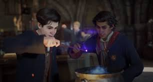
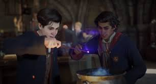
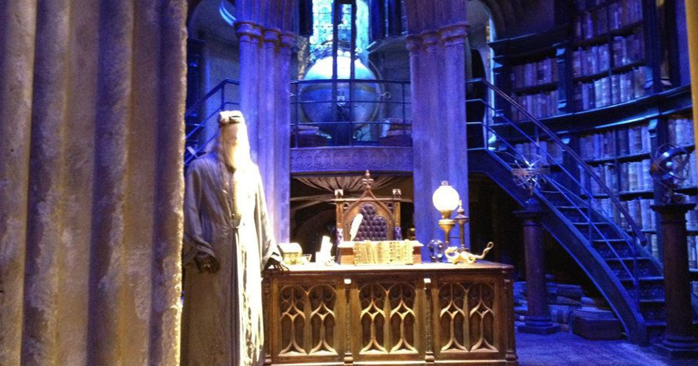
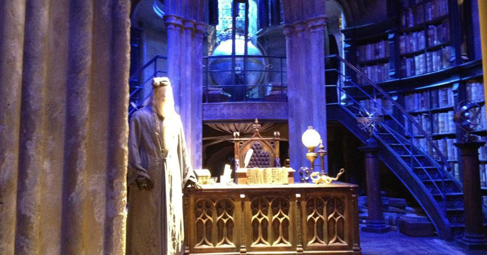

 



SLYTHERIN
A Brief Description of Slytherin
Slytherin is one of the four Houses at Hogwarts School of Witchcraft and Wizardry, founded by Salazar Slytherin. In establishing the house, Salazar instructed the Sorting Hat to pick students who had a few particular characteristics he most valued. Those characteristics include cunning, resourcefulness, leadership, and ambition. Many Slytherin students tend to clique together, often acquiring leaders, which further exemplifies Slytherin's ambitious qualities. Examples of these include Draco Malfoy’s Gang and the Death Eaters.
The founder highly valued and favoured pure-blood students and the Sorting Hat admitted that it can be a factor when being sorted. Students of any blood status can now be placed in the house. However, a Muggle-Born student from that house is considered to be quite rare.
The emblematic animal of the house is a snake and its colours are green and silver. There were two notable heads of the house; Horace Slughorn took the role twice, and Severus Snape. The patron ghost of the house is the Bloody Baron.
Traits
Slytherins tend to be ambitious, shrewd, cunning, strong leaders, and achievement-oriented. They also have highly developed senses of self-preservation. This means that Slytherins tend to hesitate before acting, so as to weigh all possible outcomes before deciding exactly what should be done.
According to Albus Dumbledore, the qualities which Salazar valued in the students he had chosen included cleverness, resourcefulness, determination, and "a certain disregard for the rules." Dumbledore noted that all of these were qualities possessed by Harry Potter, who was a Gryffindor but was almost placed in Slytherin.
Slytherins tend to take charge and possess strong leadership skills. They are often self-assured and confident of their own competence and can be very loyal.
Another characteristic some Slytherins share is a tendency towards deep, unrequited love. Severus Snape and The Bloody Baron held abiding but unreturned feelings for Lily Evans and Helena Ravenclaw, respectively. Although some Slytherins, such as Tom Riddle, were incapable of feeling love at all, those that did were known to cherish their passion abidingly and unconditionally, although often tragically due to an inability to act appropriately on their feelings. Interestingly, Bellatrix Lestrange held feelings for Tom Riddle himself, which was a factor in her fanatical devotion to the Death Eaters; although Lord Voldemort was incapable of loving her in return, the existence of Delphini suggests that there was at least some kind of intimacy between them.
Reputation
Slytherin has a well-known reputation for creating dark witches and wizards that many would even say that every dark witch or wizard was actually in Slytherin. (It also didn’t help that Voldemort himself was in Slytherin too when he was a student at Hogwarts) While it is true that many were in the house, it is untrue to say every single one of them was, as Peter Pettigrew, betrayer of James and Lily, was in Gryffindor and Quirinus Quirrell was in Ravenclaw.
It appears that reputation has led to an ironic prejudice against the entire house. It is unknown how many dark witches and wizards were from this house before Tom Riddle began recruiting Death Eaters but many of them came from a family that valued blood purity and would prefer, like Riddle, to be in the house and recruit from there.
In fairer terms, there were many good witches and wizards in the house who opposed the use of the Dark Arts, as well as discrimination based on blood purity, such as Horace Slughorn, Andromeda Tonks, and Leta Lestrange.
Common Room
The Slytherin common room is in the dungeons of Hogwarts Castle and underneath the Black Lake. Because of this, the light in the common room is green. Harry Potter along with Ron Weasley entered the common room in his second year to find out if Draco Malfoy was the one opening the Chamber of Secrets. To enter the Slytherin common room one must merely speak aloud the current password in front of a stretch of a damp stone wall; once the word is uttered a concealed stone door will slide aside leaving a rectangular hole in the wall leading to the Slytherin common room. The only known Slytherin password is "pureblood", used in 1992.